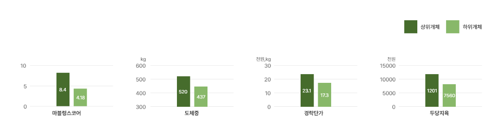
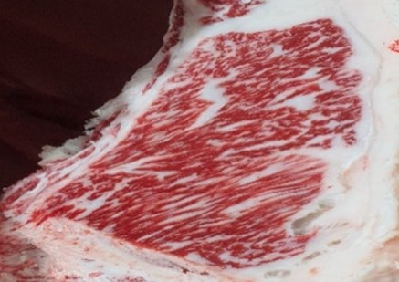
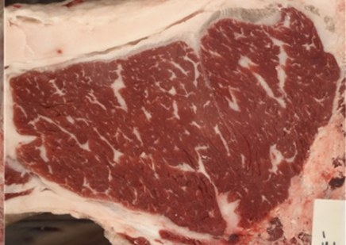

유전정보 분석 서비스
유전체육종가 분석 서비스 개요
한우는 유전 능력이 다양해서 유전 능력에 따라 출하 가격이 2배 이상 차이가 날 수 있습니다. 한우 모근 DNA 유전체 분석 서비스를 통하여 우수한 유전 능력을 보유한 한우를 선발합니다. 본사는 거세한우/번식우 실증 데이터를 바탕으로 분석 개체에 적합한 유전능력 맞춤형 사양 방안을 제안합니다. 번식우는 근친도와 선발지수를 고려한 교배조합을 함께 제안합니다.
서비스 활용 방안
거세우/수소
- 육질형 사양: 고급육 출현율 향상 → 농가소득 증대
- 육량형 사양: 도체중 증가, 육량 C등급 출현율 감소 → 회전율 증가, 농가소득 증대
- 열등형 사양: 사육비 절감, 사육기간 단축(정부 인센티브 획득)
번식우
- 육질형 송아지 생산: 육질형 우량 송아지 생산을 통한 농가 소득 증대, 고능력 암소 축군 유지
- 육량형 송아지 생산: 육량형 우량 송아지 생산을 통한 농가 소득 증대
- 번식우 비육 출하: 송아지 생산하지 않고 암소 비육 출하 → 유전능력 열등 개체 도태 효과
서비스 개요
DNA 분석 유전체 육종가 평가
육질 우수
육량 우수
육량 우수
육질형 사양
저탄소 사양
저탄소 사양
육질 우수
육량 열등
육량 열등
육질형 사양
육질 열등
육량 우수
육량 우수
육량형 사양
저탄소 사양
저탄소 사양
육질 열등
육량 열등
육량 열등
저탄소 사양
한우 거세우/수소 유전 정보 분석 서비스 개요
DNA 분석 유전체 육종가 평가
육질 우수
육량 우수
육량 우수
육질형 송아지 생산
육질 우수
육량 열등
육량 열등
육질형 송아지 생산
육질 열등
육량 우수
육량 우수
육량형 송아지 생산
육질 열등
육량 열등
육량 열등
번식우 비육 출하
한우 번식우 유전 정보 분석 서비스 개요
적용사례
- 유전체 육종가에 따라 상하위 개체를 구분하여 사양 실험 수행 - 마블링스코어, 도체중, 경락단가, 두당지육가격: 상위그룹이 하위그룹보다 월등이 우수함
- 유전능력 맞춤형 정밀 사육으로 농가 소득 극대화를 위한 실증 자료 활용


상위개체 마블링섬세도 : 2.94

하위개체 마블링섬세도 : 1.97
적용 사례 – KPN 교배조합 제안
- 유전정보 분석 결과를 바탕으로 최적의 KPN 제안 - 농가 보유 KPN 맞춤 KPN 교배조합 제공을 통한 편의성 개선
| 개체번호 | 선택 정액 | 근교 개수 | 근내 지방도 | 12개월령 체중 | 도체중 | 등심 단면적 | 등지방 두께 | 선발 지수 | 제안 순위 |
|---|---|---|---|---|---|---|---|---|---|
| A | KPN | 0.092% | A | A | A | A | A | 16.50 | 1 |
| KPN | 0.756% | A | A | A | A | C | 14.49 | 2 | |
| KPN | 1.772% | A | A | A | A | B | 14.06 | 3 | |
| KPN | 2.222% | A | A | A | B | B | 13.06 | 4 | |
| KPN | 1.078% | A | A | A | B | B | 12.99 | 5 | |
| KPN | 0.000% | A | A | A | B | B | 12.97 | 6 | |
| KPN | 0.817% | A | A | A | B | C | 12.89 | 7 | |
| KPN | 0.712% | A | A | A | B | C | 12.44 | 8 | |
| KPN | 1.549% | B | A | A | A | A | 12.31 | 9 | |
| KPN | 0.019% | A | C | A | C | B | 12.28 | 10 |
| 개체번호 | 선택 정액 | 근교 개수 | 근내 지방도 | 12개월령 체중 | 도체중 | 등심 단면적 | 등지방 두께 | 선발 지수 | 제안 순위 |
|---|---|---|---|---|---|---|---|---|---|
| B | KPN | 1.287% | B | A | A | A | C | 14.85 | 1 |
| KPN | 1.423% | B | A | A | A | A | 14.43 | 2 | |
| KPN | 1.258% | B | A | A | A | B | 13.43 | 3 | |
| KPN | 0.587% | B | A | A | A | B | 13.34 | 4 | |
| KPN | 1.061 | B | A | A | A | B | 13.25 | 5 | |
| KPN | 1.663% | A | A | A | A | B | 12.64 | 6 | |
| KPN | 0.888% | B | A | A | A | A | 12.58 | 7 | |
| KPN | 1.659% | B | A | A | A | B | 12.51 | 8 | |
| KPN | 1.315% | A | A | A | A | C | 12.43 | 9 | |
| KPN | 1.181% | B | A | A | A | B | 12.34 | 10 |